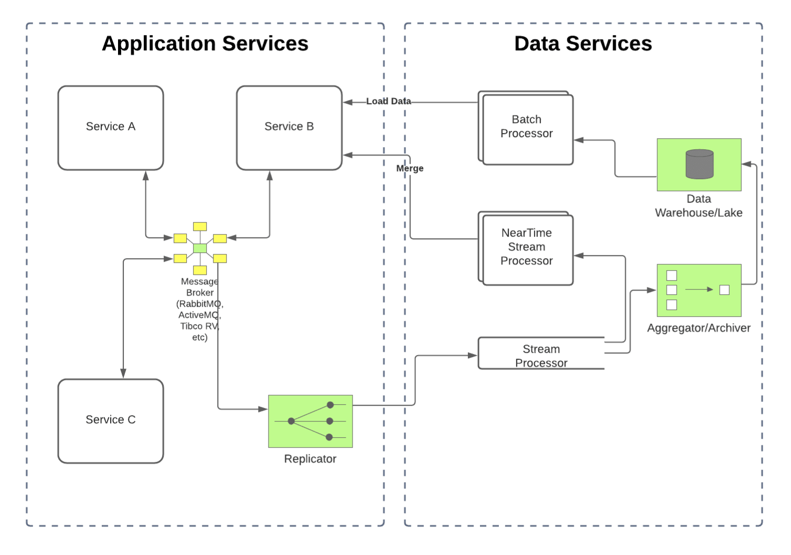
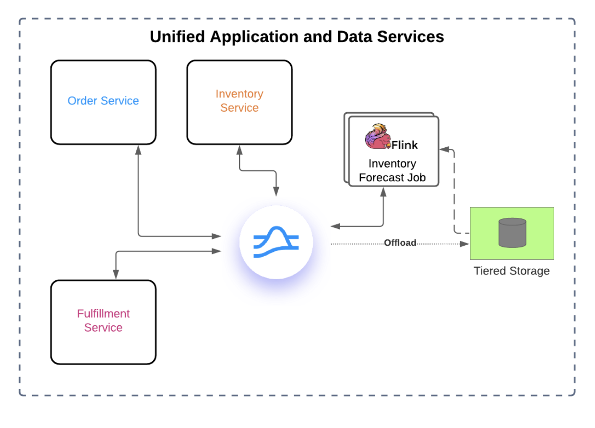

The Apache Pulsar community releases version 2.9.2! 60 contributors provided improvements and bug fixes that delivered 317 commits.
Highlights of this release are as below:
Transactions performance test tool is available. PR-11933
Brokers decrease the number of unacked messages. PR-13383
Readers continue to read data from the compacted ledgers. PR-13629
This blog walks through the most noteworthy changes grouped by the affected functionalities. For the complete list including all features, enhancements, and bug fixes, check out the Pulsar 2.9.2 Release Notes.
Notable bug fixes and enhancements
Readers continue to read data from the compacted ledgers. PR-13629
Issue
Previously, when topics were unloaded, some data was lost to be read by readers if they have consumed some messages from some compacted ledgers.
Resolution
Rewound the reader cursor to the next message of the mark delete position if readCompacted = true.
Brokers decrease the number of unacked messages. PR-13383
Issue
Previously, brokers did not decrease the number of unacked messages if batch ack was enabled. Consequently, consumers were blocked if they reached maxUnackedMessagesPerConsumer limit.
Resolution
Decreased the number of unacked messages when individualAckNormal was called.
Chunked messages can be queried through Pulsar SQL. PR-12720
Issue
Previously, chunked messages could not be queried through Pulsar SQL.
Resolution
Add a chunked message map in PulsarRecordCursor to maintain incomplete chunked messages. If one chunked message was received completely, it would be offered in the message queue to wait for deserialization.
Support enable or disable schema upload at the broker level. PR-12786
Issue
Previously, Pulsar didn't support enabling or disabling schema upload at the broker level.
Resolution
Added the configuration isSchemaAutoUploadEnabled on the broker side.
Readers can read the latest messages in compacted topics. PR-14449
Issue
Previously, readers were not able to read the latest messages in compacted topics if readers enabled readCompacted and all the data of topics has been compacted to compacted ledgers.
Resolution
Added the forceReset configuration for the managed cursor, so that the cursor could be reset to a given position and readers can read data from compacted ledgers.
Transaction sequenceId can be recovered correctly. PR-13209
Issue
Previously, the wrong transaction sequenceId was recovered due to incorrect managedLedger properties.
Resolution
Used ManagedLedgerInterceptor to update current sequenceId to managedLedger properties and more.
Transactions performance test tool is available. PR-11933
Issue
Previously, it was hard to test transaction performance (such as the delay and rate of sending and consuming messages) when opening a transaction.
Resolution
Added PerformanceTransaction class to support this enhancement.
Port exhaustion and connection issues no longer exist in Pulsar Proxy. PR-14078
Issue
Previously, Pulsar proxy would get into a state where it stopped proxying broker connections while Admin API proxying kept working.
Resolution
Optimized the proxy connection to fail-fast if the target broker was not active, added connect timeout handling to proxy connection, and more.
No race condition in OpSendMsgQueue when publishing messages. PR-14231
Issue
After the method getPendingQueueSize() was called and the send receipt came back, the peek from the pendingMessages might get NPE during the process.
Resolution
Added a thread-safe message count object in OpSendMsgQueue for each compute process.
Change ContextClassLoader to NarClassLoader in AdditionalServlet. PR-13501
Issue
Previously, if a class was dynamically loaded by NarClassLoader, ClassNotFoundException occurred when it was used by the default class load.
Resolution
Changed context class loader through Thread.currentThread().setContextClassLoader(classLoader) before every plugin calling back and changed the context class loader back to original class loader afterwards.
What’s Next?
If you are interested in learning more about Pulsar 2.9.2, you can download and try it out now!
Pulsar Summit San Francisco 2022 will take place on August 18th, 2022. Register now and help us make it an even bigger success by spreading the word on social media!
For more information about the Apache Pulsar project and current progress, visit
the Pulsar website, follow the project on Twitter
@apache_pulsar, and join Pulsar Slack!
ManagedLedger can be referenced correctly when OpAddEntry is recycled. PR-12103
NPE does not occur on OpAddEntry while ManagedLedger is closing. PR-12364
This blog walks through the most noteworthy changes grouped by the affected functionalities. For the complete list including all enhancements and bug fixes, check out the Pulsar 2.7.4 Release Notes.
A serious vulnerability was reported regarding Log4j that can allow remote execution for attackers. The vulnerability issue is described and tracked under CVE-2021-44228.
Resolution
Pulsar 2.7.4 upgraded Log4j to 2.17.0.
ManagedLedger can be referenced correctly when OpAddEntry is recycled. PR-12103
Issue
Previously, after a write failure, a task was scheduled in the background to force close the ledger and trigger the creation of a new ledger. If the OpAddEntry instance was already recycled, that could lead to either an NPE or undefined behavior.
Resolution
The ManagedLedgerImpl object reference is copied to a final variable so the background task will not be dependent on the lifecycle of the OpAddEntry instance.
No potential race condition in the BlobStoreBackedReadHandler. PR-12123
Issue
Previously, BlobStoreBackedReadHandler entered an infinite loop when reading an offload ledger. There was a race condition between the operation of reading entries and closing BlobStoreBackedReadHandler.
Resolution
Added a state check before reading entries and made the BlobStoreBackedReadHandler exit loop when the entryID is bigger than the lastEntryID.
NPE does not occur on OpAddEntry while ManagedLedger is closing. PR-12364
Issue
Previously, the test ManagedLedgerBkTest#managedLedgerClosed closed ManagedLedger object on some asyncAddEntry operations and failed with NPE.
Resolution
Closed OpAddEntry when ManagedLedger signaled OpAddEntry to fail. In this way, the OpAddEntry object was correctly recycled and the failed callback was correctly triggered.
Set a topic policy through the topic name of a partition correctly. PR-11294
Issue
Previously, the topic name of a partition could not be used to set a topic policy.
Resolution
Allowed setting a topic policy through a topic name of a partition by converting the topic name of a partition in SystemTopicBasedTopicPoliciesService.
Dispatch rate limiter takes effect for consumers. PR-8611
Issue
Previously, dispatch rate limiter did not take effect in cases where all consumers started reading in the next second since acquiredPermits was reset to 0 every second.
Resolution
Changed the behaviour of DispatchRateLimiter by minus permits every second instead of reset acquiredPermits to 0. Consumers stopped reading entries temporarily until acquiredPermits returned to a value less than permits .
NPE does not occur when executing unload bundles operations. PR-11310
Issue
When performing pressure tests on persistent partitioned topics, NPE occurred when executing unload bundles operations. Concurrently, producers did not write messages.
Resolution
Added more safety checks to fix this issue.
Fix inconsistent behavior for Namespace bundles cache. PR-11346
Issue
Previously, namespace bundle cache was not invalidated after a namespace was deleted.
Resolution
Invalidated namespace policy cache when bundle cache was invalidated.
Close the replicator and replication client after a cluster is deleted. PR-11342
Issue
Previously, the replicator and the replication client were not closed after a cluster was deleted. The producer of the replicator would then try to reconnect to the deleted cluster continuously.
Resolution
Closed the relative replicator and replication client.
Publish rate limiter takes effect as expected. PR-10384
Issue
Previously, there were various issues if preciseTopicPublishRateLimiterEnable was set to true for rate limiting:
Updating the limits did not set a boundary when changing the limits from a bounded limit to an unbounded limit.
Each topic created a scheduler thread for each limiter instance.
Topics did not release the scheduler thread when the topic was unloaded or the operation closed.
Updating the limits did not close the scheduler thread related to the replaced limiter instance
Resolution
Cleaned up the previous limiter instances before creating new limiter instances.
Used brokerService.pulsar().getExecutor() as the scheduler for the rate limiter instances.
Added resource cleanup hooks for topic closing (unload).
Clean up newly created ledgers if fails to update ZNode list. PR-12015
Issue
When updating a ZNode list, ZooKeeper threw an exception and did not clean up the created ledger. Newly created ledgers were not indexed to a topic managedLedger list and could not be cleared up as topic retention. Also, ZNode numbers increased in ZooKeeper if the ZNode version mismatch exception was thrown out.
Resolution
Deleted the created ledger from broker cache and BookKeeper regardless of exception type when the ZNode list failed to update.
What’s Next?
If you are interested in learning more about Pulsar 2.7.4, you can download and try it out now!
Pulsar Summit Asia 2021 will take place on January 15-16, 2022. Register now and help us make it an even bigger success by spreading the word on social media!
For more information about the Apache Pulsar project and current progress, visit
the Pulsar website, follow the project on Twitter
@apache_pulsar, and join Pulsar Slack!
Yesterday, a new serious vulnerability was reported regarding Log4j that can
allow remote execution for attackers.
The vulnerability issue is described and tracked under CVE-2021-44228.
Current releases of Apache Pulsar are bundling Log4j2 versions that are affected by this vulnerability.
Default configuration, combined with JVM version and other factors, can render it exploitable.
We strongly recommend to follow the advisory of the Apache Log4j community and patch your systems
as soon as possible, as well as looking for unexpected behavior in your Pulsar logs.
There are 2 workarounds to patch a Pulsar deployments. You can set either of:
Both approaches are effective in mitigating the vulnerability for Pulsar
services.
Additionally, when running Pulsar Functions with Kubernetes runtime, you should update
your Docker images, following the example described here.
If you are using the Pulsar Helm Chart for deploying in Kubernetes, a new
version of the chart is already available and it applies the above mentioned workaround.
If upgrading is not an option, you may also mitigate by adding -Dlog4j2.formatMsgNoLookups=true to the PULSAR_EXTRA_OPTS in the configData section for proxy, broker, bookkeeper, zookeeper, auto-recovery, and relative components in the helm values file.
We are already preparing new patch releases, 2.7.4, 2.8.2 and 2.9.1. These
releases will be ready in the next few days and will bundle the Log4j2 2.15.0,
which contains the vulnerability fix.
The Apache Pulsar community releases version 2.8.1! 49 contributors provided improvements and bug fixes that delivered 213 commits.
Highlights of this release are as below:
Key-shared subscriptions no longer stop dispatching to consumers when repeatedly opening and closing consumers. PR-10920
System topic no longer has potential data loss when not configured for compaction. PR-11003
Consumers are not allowed to read data on topics to which they are not subscribed. PR-11912
This blog walks through the most noteworthy changes grouped by component. For the complete list including all features, enhancements, and bug fixes, check out the Pulsar 2.8.1 Release Notes.
Notable bug fixes and enhancements
Broker
Precise publish rate limit takes effect as expected. PR-11446
Issue: Previously, when setting precise publish rate limits on topics, it did not work.
Resolution: Implemented a new RateLimiter using the LeakingBucket and FixedWindow algorithms.
Messages with the same keys are delivered to the correct consumers on Key-Shared subscriptions. PR-10762
Issue: Messages with the same keys were out of order when message redelivery occurred on a Key-Shared subscription.
Resolution: When sending a message to messagesToRedeliver, the broker saved the hash value of the key. If the dispatcher attempted to send newer messages to the consumer that had a key corresponding to any one of the saved hash values, they were added to messagesToRedeliver instead of being sent. This prevented messages with the same key from being out of order.
Active producers with the same name are no longer removed from the topic map. PR-11804
Issue: Previously, when there were producers with the same name, an error would be triggered and the old producer would be removed even though it was still writing to a topic.
Resolution: Validated producers based on a connection ID (local & remote addresses and unique ID) and a producer ID within that connection rather than a producer name.
Topics in a fenced state can recover when producers continue to reconnect to brokers. PR-11737
Issue: Previously, when a producer continued to reconnect to a broker, the fenced state of the topic was always set to true, which caused the topic to be unable to recover.
Resolution: Add an entry to ManagedLedgerException when the polled operation is not equal to the current operation.
Topic properly initializes the cursor to prevent data loss. PR-11547
Issue: Previously, when subscribing to a topic with the earliest position, data would be lost because ManagedLedger used a wrong position to initialize a cursor.
Resolution: Added a test to check a cursor's position when subscribing to a topic with the earliest position.
Deadlock no longer occurs when using hasMessageAvailableAsync and readNextAsync. PR-11183
Issue: Previously, when messages were added to an incoming queue, a deadlock might occur. The deadlock might happen in two possible scenarios. First, if the message was added to the queue before the message was read. Second, if readNextAsync was completed before future.whenComplete was called.
Resolution: Used an internal thread to process the callback of hasMessageAvailableAsync.
Memory leak does not occur when calling getLastMessageId API. PR-10977
Issue: Previously, the broker ran out of memory when calling the getLastMessageId API.
Resolution: Added the entry.release() call to the PersistentTopic.getLastMessageId.
Compaction is triggered for system topics. PR-10941
Issue: Previously, when a topic had only non-durable subscriptions, the compaction was not triggered because it had 0 estimated backlog size.
Resolution: Used the total backlog size to trigger the compaction. Changed the behavior in the case of no durable subscriptions to use the total backlog size
Key-shared subscriptions no longer stop dispatching to consumers when repeatedly opening and closing consumers. PR-10920
Issue: Repeatedly opening and closing consumers with a Key-Shared subscription might occasionally stop dispatching messages to all consumers.
Resolution: Moved the mark-delete position and removed the consumer from the selector before calling removeConsumer().
Consumers are not allowed to read data on topics to which they are not subscribed. PR-11912
Issue: Previously, the request ledger was not checked whether it belonged to a consumer’s connected topic, which allowed the consumer to read data that does not belong to the connected topic.
Resolution: Added a check on the ManagedLedger level before executing read operations.
Issue: Previously, the retention policy did not work because it was not set in the managedLedger configuration.
Resolution: Set the retention policy in the managedLedger configuration to the onUpdate listener method.
System topic no longer has potential data loss when not configured for compaction. PR-11003
Issue: Previously, data might be lost if there were no durable subscriptions on topics.
Resolution: Leveraged the topic compaction cursor to retain data.
Proxy
Pulsar proxy correctly shuts down outbound connections. PR-11848
Issue: Previously, there was a memory leak of outgoing TCP connections in the Pulsar proxy because the ProxyConnectionPool instances were created outside the PulsarClientImpl instance and not closed when the client was closed.
Resolution: Shut down the ConnectionPool correctly.
Function
Pulsar Functions support Protobuf schema. PR-11709
Issue: Previously, the exception GeneratedMessageV3 is not assignable was thrown when using a Protobuf schema.
Resolution: Added the relevant dependencies to the Pulsar instance.
Client
Partitioned-topic consumers clean up resources after a failure. PR-11754
Issue: Previously, partitioned-topic consumers did not clean up the resources when failing to create consumers. If this failure occurred with non-recoverable errors, it triggered a memory leak, which made applications unstable.
Resolution: Closed and cleaned timer task references.
Race conditions do not occur on multi-topic consumers. PR-11764
Issue: Previously, there was a race condition between 2 threads when one of the individual consumers was in a "paused" state and the shared queue was full.
Resolution: Validated the state of the shared queue after marking the consumer as "paused". The consumer is not blocked if the other thread has emptied the queue in the meantime.
Consumers are not blocked on batchReceive. PR-11691
Issue: Previously, consumers were blocked when Consumer.batchReceive() was called concurrently by different threads due to a race condition in ConsumerBase.java.
Resolution: Put pinnedInternalExecutor in ConsumerBase to allow batch timer, ConsumerImpl, and MultiTopicsConsumerImpl to submit work in a single thread.
Issue: Previously, deadlock might happen when custom logging was enabled in the Python client.
Resolution: Detached the worker thread and reduced log level.
What is Next?
If you are interested in learning more about Pulsar 2.8.1, you can download and try it out now!
The first-ever Pulsar Virtual Summit Europe 2021 will take place in October. Register now and help us make it an even bigger success by spreading the word on social media!
For more information about the Apache Pulsar project and the progress, visit
the Pulsar website, follow the project on Twitter
@apache_pulsar, and join Pulsar Slack!
Last year, Pulsar Summit Asia featured more than 40 interactive sessions by tech leads, open-source developers, software engineers, and software architects from Tencent Group, BIGO, Kingsoft Cloud, Splunk, Yahoo! JAPAN, Nutanix, Dada Group, TIBCO, Huawei Cloud, and more. The conference garnered nearly 1,000 attendees around the globe mostly from Asia, including attendees from top tech, fintech and media companies.
Cumulatively, the Pulsar Summits drew more than 100 speakers, thousands of attendees, and hundreds of companies from diverse industries. It is a unique opportunity to network and learn about Pulsar project updates, ecosystem developments, best practices, and adoption stories.
This year, the Pulsar Summit Asia will be hosted on November 20-21, 2021 by StreamNative. You can join us offline in Beijing for one day of Pulsar Training and one day of keynotes and breakout sessions. All the talks will be streamed live online.
CFP Details
Join us and speak at the Pulsar Summit Asia 2021!
We are looking for Pulsar stories that are innovative, informative, or thought-provoking. Here are some suggestions:
Your Pulsar use case / success story
A technical deep dive
Pulsar best practices
Pulsar ecosystem updates
To speak at the summit, please submit an abstract about your presentation. Remember to keep your proposal short, relevant and engaging.
First-time Speakers Welcomed!
First time submitting? Don't feel intimidated. We strongly encourage first-time speakers to submit talks for the Pulsar Summit Asia 2021. If your submission is similar to a previous talk in the past Pulsar Summits, please include information on how this version will be different. We hope to see some exciting updates on the topic.
We welcome submissions from around the globe. Our hybrid conference model has taken time differences into consideration. After your talk is accepted, we will schedule the sessions and send you the presentation options.
Speaker Benefits
As a speaker, you will receive:
The chance to demonstrate your experience and deep knowledge in the rapidly growing event streaming space.
Your name, title, company, and bio will be featured on the Pulsar Summit Asia 2021 website.
Your session will be added to the Pulsar Summit YouTube Channel and promoted on Twitter, LinkedIn, and WeChat.
A professionally produced video of your presentation.
Exclusive Pulsar swag only available to the speakers.
Important Dates
CFP opens: August 18th, 2021
CFP closes: September 8th, 2021
Speaker notifications: September 22th, 2021
Schedule announcement: October 13th, 2021
Submissions are open until September 8th. If you want some advice or feedback on your proposal, or have any questions about the summit, please do not hesitate to contact us at organizers@pulsar-summit.org. We are happy to help!
Sponsor Pulsar Summit Asia
Pulsar Summit is a conference for the community and sponsorship is needed. Sponsoring this event provides a great opportunity for your organization to further engage with the Apache Pulsar community. Contact us at organizers@pulsar-summit.org to learn more.
Help us make Pulsar Summit Asia 2021 a big success by spreading the word and submitting your proposal! Follow Pulsar Summit on Twitter to receive the latest updates of the conference.
The Apache Pulsar community releases version 2.7.3! 34 contributors provided improvements and bug fixes that delivered 79 commits.
Highlights
Cursor reads adhere to the dispatch byte rate limiter setting and no longer cause unexpected results. PR-11249
The ledger rollover scheduled task runs as expected. PR-11226
This blog walks through the most noteworthy changes. For the complete list including all enhancements and bug fixes, check out the Pulsar 2.7.3 Release Notes.
Notable bug fixes and enhancements
Broker
Cursor reads adhere to the dispatch byte rate limiter setting. PR-9826
Issue: When using byte rates, the dispatch rates were not respected (regardless
of being a namespace or topic policy).
Resolution: Fixed behavior of dispatch byte rate limiter setting. Cursor reads adhere to the setting and no longer cause unexpected results.
The ledger rollover scheduled task runs as expected. PR-11226
Issue: Previously, the ledger rollover scheduled task was executed before reaching the ledger maximum rollover time, which caused the ledger not to roll over in time.
Resolution: Fixed the timing of the ledger rollover schedule, so the task runs only after the ledger is created successfully.
The topic-level retention policy works correctly when restarting a broker. PR-11136
Issue: Previously, when setting a topic-level retention policy for a topic and then restarting the broker, the topic-level retention policy did not work.
Resolution: Fixed behavior of the policy so it replays all policy messages after initiating policyCacheInitMap and added a retention policy check test when restarting the broker.
The lastMessageId API call no longer causes a memory leak. PR-10977
Issue: Previously, there was a memory leak when calling the lastMessageId API, which caused the broker process to be stopped by Kubernetes.
Resolution: Added the missing entry.release() call to PersistentTopic.getLastMessageId to ensure the broker does not run out of memory.
Issue: When performing the admin operation to get the namespace of a tenant, ZooKeeper reads were issued on the ZooKeeper client and not getting cached by the brokers.
Resolution: Fixed ZooKeeper caching when fetching a list of namespaces for a tenant.
Monitoring threads that call LeaderService.isLeader() are no longer blocked. PR-10512
Issue: When LeaderService changed leadership status, it was locked with a synchronized block, which also blocked other threads calling LeaderService.isLeader().
Resolution: Fixed the deadlock condition on the monitoring thread so it is not blocked by LeaderService.isLeader() by modifyingClusterServiceCoordinatorandWorkerStatsManagerto check if it is a leader fromMembershipManager`.
hasMessageAvailable can read messages successfully. PR-10414
Issue: When hasMessageAvailableAsync returned true, it could not read messages because messages were filtered by acknowledgmentsGroupingTracker.
Resolution: Fixed the race conditions by modifying acknowledgmentsGroupingTracker to filter duplicate messages, and then cleanup the messages when the connection is open.
Issue: Proxies were not creating partitions because they were using the current ZooKeeper metadata.
Resolution: Changed the proxy to handle PartitionMetadataRequest by selecting and fetching from an available broker instead of using current ZooKeeper metadata.
Pulsar admin
Flag added to indicate whether or not to create a metadata path on replicated clusters. PR-11140
Issue: When creating a partitioned topic in a replicated namespace, it did not
create a metadata path /managed-ledgers on replicated clusters.
Resolution: Added a flag (createLocalTopicOnly) to indicate whether or not to create a metadata path for a partitioned topic in replicated clusters.
A topic policy can no longer be set for a non-existent topic. PR-11131
Issue: Due to a redirect loop in a topic policy, you can set a policy for a non-existing topic or a partition of a partitioned topic.
Resolution: The fix added an authoritative flag for a topic policy to avoid a redirect loop. You can not set a topic policy for a non-existent topic or a partition of a partitioned topic. If you set a topic policy for a partition of a 0-partition topic, it redirects to the broker.
Discovery service no longer hard codes the topic domain as persistent. PR-10806
Issue: When using the lookup discovery service for a partitioned non-persistent topic, it returned zero rather than the number of partitions. The Pulsar client tried to connect to the topic as if it were a normal topic.
Resolution: Implemented topicName.getDomain().value() rather than hard coding persistent. Now you can use the discovery service for a partitioned, non-persistent topic successfully.
Other connectors can now use the Kinesis Backoff class. PR-10744
Issue: The Kinesis sink connector Backoff class in the Pulsar client implementation project in combination with the dependency org.apache.pulsar:pulsar-client-original increased the connector size.
Resolution: Added a new class Backoff in the function io-core project so that the Kinesis sink connector and other connectors can use the class.
Client
A FLOW request with zero permits can not be sent. PR-10506
Issue: When a broker received a FLOW request with zero permits, an exception was thrown and then the connection was closed. This triggered frequent reconnections and caused duplicate or out-of-order messages.
Resolution: Added a validation that verifies the permits of a FLOW request before sending it. If the permit is zero, the FLOW request can not be sent.
Function and connector
The Kinesis sink connector acknowledges successful messages. PR-10769
Issue: The Kinesis sink connector did not acknowledge messages after they were sent successfully.
Resolution: Added acknowledgement for the Kinesis sink connector once a message is sent successfully.
Docker
Function name length cannot exceed 52 characters when using Kubernetes runtime. PR-10531
Issue: When using Kubernetes runtime, if a function was submitted with a valid length (less than 55 characters), a StatefulSet was created but it was unable to spawn pods.
Resolution: Changed the maximum length of a function name from 55 to 53 characters for Kubernetes runtime. With this fix, the length of a function name can not exceed 52 characters.
Dependency
pulsar-admin connection to proxy is stable when TLS is enabled. PR-10907
Issue: pulsar-admin was unstable over the TLS connection because of the Jetty bug in SSL buffering introduced in Jetty 9.4.39. It caused large function jar uploads to fail frequently.
Resolution: Upgraded Jetty to 9.4.42.v20210604, so that pulsar-admin connection to proxy is stable when TLS is enabled.
What is Next?
If you are interested in learning more about Pulsar 2.7.3, you can download 2.7.3 and try it out now!
The first-ever Pulsar Virtual Summit Europe 2021 will take place in October. Register now and help us make it an even bigger success by spreading the word on social!
For more information about the Apache Pulsar project and the progress, visit
the Pulsar website, follow the project on Twitter
@apache_pulsar, and join Pulsar Slack!
We are very glad to see the Apache Pulsar community has successfully released the 2.8.0 version, which includes a number of exciting upgrades and enhancements. This blog provides a deep dive into the updates from the 2.8.0 release as well as a detailed look at the major Pulsar developments that have helped it evolve into the unified messaging and streaming platform it is today.
Note: The Pulsar community typically releases a major release every 3 months, but it has been 6 months since the release of 2.7.0. We spent more time on 2.8.0 in order to make the transaction API generally available to the Pulsar community.
Release 2.8 Overview
The key features and updates in this release are:
Exclusive Producer
Package Management API
Simplified Client Memory Limit Settings
Broker Entry Metadata
New Protobuf Code Generator
Transactions
Exclusive Producer
By default, the Pulsar producer API provides a “multi-writer” semantic to append messages to a topic. However, there are several use cases that require exclusive access for a single writer, such as ensuring a linear non-interleaved history of messages or providing a mechanism for leader election.
This new feature allows applications to require exclusive producer access in order to achieve a “single-writer” situation. It guarantees that there should be 1 single writer in any combination of errors. If the producer loses its exclusive access, no more messages from it can be published on the topic.
One use case for this feature is the metadata controller in Pulsar Functions. In order to write a single linear history of all the functions metadata updates, the metadata controller requires to elect one leader and that all the “decisions” made by this leader be written on the metadata topic. By leveraging the exclusive producer feature, Pulsar guarantees that the metadata topic contains different segments of updates, one per each successive leader, and there is no interleaving across different leaders. See “PIP-68: Exclusive Producer” for more details.
Package Management API
Since its introduction in version 2.0, the Functions API has become hugely popular among Pulsar users. While it offers many benefits, there are a number of ways to improve the user experience. For example, today, if a function is deployed multiple times, the function package ends up being uploaded multiple times. Also, there is no version management in Pulsar for Functions and IO connectors. The newly introduced package management API provides an easier way to manage the packages for Functions and IO connectors and significantly simplifies the upgrade and rollback processes. Read “Package Management API” for more details.
Simplified Client Memory Limit Settings
Prior to 2.8, there are multiple settings in producers and consumers that allow controlling the sizes of the internal message queues. These settings ultimately control the amount of memory the Pulsar client uses. However, there are few issues with this approach that make it complicated to select an overall configuration that controls the total usage of memory.
For example, the settings are based on the “number of messages”, so the expected message size must be adjusted per producer or consumer. If an application has a large (or unknown) number of producers or consumers, it’s very difficult to select an appropriate value for queue sizes. The same is true for topics that have many partitions.
In 2.8, we introduced a new API to set the memory limit. This single memoryLimit setting specifies a maximum amount of memory on a given Pulsar client. The producers and consumers compete for the memory assigned. It ensures the memory used by the Pulsar client will not go beyond the set limit. Read “PIP-74: Pulsar client memory limits” for more details.
Broker Entry Metadata
Pulsar messages define a very comprehensive set of metadata properties. However, to add a new property, the MessageMetadata definition in Pulsar protocol must change to inform both broker and client of the newly introduced property.
But in certain cases, this metadata property might need to be added from the broker side, or need to be retrieved by the broker at a very low cost. To prevent deserializing these properties from the message metadata, we introduced “Broker Entry Metadata” in 2.8.0 to provide a lightweight approach to add additional metadata properties without serializing and deserializing the protobuf-encoded MessageMetadata.
This feature unblocks a new set of capabilities for Pulsar. For example, we can leverage broker entry metadata to generate broker publish time for the messages appended to the Pulsar topic. The other example is to generate a monotonically increasing sequence-id for messages produced to a Pulsar topic. We use this feature in Kafka-on-Pulsar to implement Kafka offset.
New Protobuf Code Generator
Pulsar uses Google Protobuf in order to perform serialization and deserialization of the commands that are exchanged between clients and brokers. Because of the overhead involved with the regular Protobuf implementation, we have been using a modified version of Protobuf 2.4.1. The modifications were done to ensure a more efficient serialization code that used thread local cache for the objects used in the process.
This approach introduced a few issues. For example, the patch to the Protobuf code generator is only based on Protobuf version 2.4.1 and cannot be upgraded to the newer Protobuf versions. In 2.8, we switched the patched Protobuf 2.4.1 to Splunk LightProto as the code generator. The new code generator generates the fastest possible Java code for Protobuf SerDe, is 100% compatible with proto2 definition and wire protocol, and provides zero-copy deserialization using Netty ByteBuf.
Transactions
Prior to Pulsar 2.8, Pulsar only supported exactly-once semantics on single topic through Idempotent Producer. While powerful, Idempotent producer only solves a narrow scope of challenges for exactly-once semantics. For example, there is no atomicity when a producer attempts to produce messages to multiple topics. A publish error can occur when the broker serving one of the topics crashes. If the producer doesn’t retry publishing the message again, it results in some messages being persisted once and others being lost. If the producer retries, it results in some messages being persisted multiple times.
In order to address the remaining challenges described above, we’ve strengthened the Pulsar’s delivery semantics by introducing a Pulsar Transaction API to support atomic writes and acknowledgements across multiple topics. The addition of the Transaction API to Apache Pulsar completes our vision of making Pulsar a complete unified messaging and streaming platform.
Pulsar PMC member, Penghui Li, goes over this functionality in great detail in his recent blog, Exactly-once Semantics with Transactions in Pulsar. You can read it to learn more about the exactly-once semantics support in Pulsar.
Building a Unified Messaging and Streaming Platform with Apache Pulsar
The Evolution of Apache Pulsar
Apache Pulsar is widely adopted by hundreds of companies across the globe, including Splunk, Tencent, Verizon, and Yahoo! JAPAN, just to name a few. Born as a cloud-native distributed messaging system, Apache Pulsar has evolved into a complete messaging and streaming platform for publishing and subscribing, storing, and processing streams of data at scale and in real-time.
Back in 2012 the Yahoo! team was looking for a global, geo-replicated infrastructure that could manage all of Yahoo!’s messaging data. After vetting the messaging and streaming landscape it became clear that existing technologies were not able to serve the need for an event-driven organization. As a result, the team at Yahoo! set out to build its own.
At the time, there were generally two types of systems to handle in-motion data: message queues that handled mission-critical business events in real-time, and streaming systems that handled scalable data pipelines at scale. Companies had to limit their capabilities to one or the other, or they had to adopt multiple different technologies. If they chose multiple technologies, they would end up with a complex infrastructure that often resulted in data segregation and data silos, with one silo for message queues used to build application services and the other silo for streaming systems used to build data services. The figure below illustrates what this can look like.

However, with the diversity of data that companies need to process beyond operational data (like log data, click events, etc), coupled with the increase in the number of downstream systems that need access to combined business data and operational data, the system would need to support message queueing and streaming.
Beyond that, companies need an infrastructure platform that would allow them to build all of their applications on top of it, and then have those applications handle in-motion data (messaging and streaming data) by default. This way real-time data infrastructure could be significantly simplified, as illustrated in the diagram below.

With that vision, the Yahoo! team started working on building a unified messaging and streaming platform for in-motion data. Below is an overview of the key milestones on the Pulsar journey, from inception to today.
Step 1: A scalable storage for streams of data
The journey of Pulsar began with Apache BookKeeper. Apache BookKeeper implements a log-like abstraction for continuous streams and provides the ability to run it at internet-scale with simple write-read log APIs. A log provides a great abstraction for building distributed systems, such as distributed databases and pub-sub messaging. The write APIs are in the form of appends to the log. And the read APIs are in the form of continuous read from a starting offset defined by the readers. The implementation of BookKeeper created the foundation - a scalable log-backed messaging and streaming system.
Step 2: A multi-layered architecture that separates compute from storage.
On top of the scalable log storage, a stateless serving layer was introduced which runs stateless brokers for publishing and consuming messages. This multi-layered architecture separates serving/compute from storage, allowing Pulsar to manage serving and storage in separate layers.
This architecture also ensures instant scalability and higher availability. Both of these factors are extremely important and make Pulsar well-suited for building mission-critical services, such as billing platforms for financial use cases, transaction processing systems for e-commerce and retailers, and real-time risk control systems for financial institutions.
Step 3: Unified messaging model and API
In a modern data architecture, the real-time use cases can typically be categorized into two categories: queueing and streaming. Queueing is typically used for building core business application services while streaming is typically used for building real-time data services such as data pipelines.
To provide one platform able to serve both application and data services required a unified messaging model that integrates queuing and streaming semantics. The Pulsar topics become the source of truth for consumption. Messages can be stored only once on topics, but can be consumed in different ways via different subscriptions. Such unification significantly reduces the complexity of managing and developing messaging and streaming applications.
Step 4: Schema API
Next, a new Pulsar schema registry and a new type-safe producer & consumer API were added. The built-in schema registry enables message producers and consumers on Pulsar topics to coordinate on the structure of the topic’s data through the Pulsar broker itself, without needing an external coordination mechanism. With data schemas, every single piece of data traveling through Pulsar is completely discoverable, enabling you to build systems that can easily adapt as the data changes.
Furthermore, the schema registry keeps track of data compatibility between versions of the schema. As the new schemas are uploaded the registry ensures that new schema versions are able to be read by old consumers. This ensures that Producers cannot break Consumers.
Step 5: Functions and IO API
The next step was to build APIs that made it easy to get data in and out of Pulsar and process it. The goal was to make it easy to build event-driven applications and real-time data pipelines with Apache Pulsar, so you can then process those events when they arrive, no matter where they originated from.
The Pulsar IO API allows you to build real-time streaming data pipelines by plugging various source connectors to get data from external systems into Pulsar and sink connectors to get data from Pulsar into external systems. Today, Pulsar provides several built-in connectors that you can use.
Additionally, StreamNative Hub (a registry of Pulsar connectors) provides dozens of connectors integrated with popular data systems. If the IO API is for building streaming data pipelines, the Functions API is for building event-driven applications and real-time stream processors.
The serverless function concepts were adopted into stream processing and then built the Functions API as a lightweight serverless library that you can write any event processing logic using any language you like. The underlying motivation was to enable your engineering team to write stream processing logic without the operational complexity of running and maintaining yet another cluster.
Step 6: Infinite storage for Pulsar via Tiered Storage
As adoption of Apache Pulsar continued and the amount of data stored in Pulsar increased, users eventually hit a “retention cliff”, at which point it became significantly more expensive to store, manage, and retrieve data in Apache BookKeeper. To work around this, operators and application developers typically use an external store like AWS S3 as a sink for long-term storage. This means you lose most of the benefits of Pulsar’s immutable stream and ordering semantics, and instead end up having to manage two different systems with different access patterns.
The introduction of Tiered Storage allows Pulsar to offload the majority of the data to a remote cloud-native storage. This cheaper form of storage readily scales with the volume of data. More importantly, with the addition of Tiered Storage, Pulsar provides the batch storage capabilities needed to support batch processing when integrating with a unified batch and stream processor like Flink. The unified batch and stream processing capabilities integrated with Pulsar enable companies to query real-time streams with historical context quickly and easily, unlocking a unique competitive advantage.
Step 7: Protocol Handler
After introducing tiered storage, Pulsar evolved from a Pub/Sub messaging system into a scalable stream data system that can ingest, store, and process streams of data. However, existing applications written using other messaging protocols such as Kafka, AMQP, MQTT, etc had to be rewritten to adopt Pulsar’s messaging protocol.
The Protocol Handler API further reduces the overhead of adopting Pulsar for building messaging and streaming applications, and allows developers to extend Pulsar capabilities to other messaging domains by leveraging all the benefits provided by Pulsar architecture. This resulted in major collaborations between Pulsar and other industry leaders to develop popular protocol handlers including:
Step 8: Transaction API for exactly-once stream processing
More recently, transactions were added to Apache Pulsar to enable exactly-once semantics for stream processing. This is a fundamental feature that provides a strong guarantee for streaming data transformations, making it easy to build scalable, fault-tolerant, stateful messaging and streaming applications that process streams of data.
Furthermore, the transaction API capabilities are not limited to a given language client. Pulsar’s support for transactional messaging and streaming is primarily a protocol-level capability that can be presented in any language. Such protocol-level capability can be leveraged in all kinds of applications.
Building an ecosystem for unified messaging and streaming
In addition to contributing to the Pulsar technology, the community is also working to build a robust ecosystem to support it. Pulsar’s ability to support a rich ecosystem of pub-sub libraries, connectors, functions, protocol handlers, and integrations with popular query engines will enable Pulsar adopters to streamline workflows and achieve new use cases.
What is Next?
If you are interested in learning more about Pulsar 2.8.0, you can download 2.8.0 and try it out today!
If you want to learn more about how companies have adopted Pulsar, you can sign up for Pulsar Summit NA 2021!
For more information about the Apache Pulsar project and the progress, please visit the official website at https://pulsar.apache.org and follow the project on Twitter @apache_pulsar.
We are very glad to see the Apache Pulsar community has successfully released the 2.7.2 version.
This is a minor release that introduces stability fixes and a few new features without breaking changes.
We are very glad to see the Apache Pulsar community has successfully released the wonderful 2.7.0 version after accumulated hard work. It is a great milestone for this fast-growing project and the whole Pulsar community. This is the result of a huge effort from the community, with over 450 commits and a long list of new features, improvements, and bug fixes.
Here is a selection of the most interesting and major features added to Pulsar 2.7.0.
We are excited to see that the Apache Pulsar community has successfully released the 2.6.2 version after a lot of hard work. It is a great milestone for this fast-growing project and the Pulsar community. 2.6.2 is the result of a big effort from the community, with over 154 commits and a long list of improvements and bug fixes.
Here are some highlights and major features added in Pulsar 2.6.2.